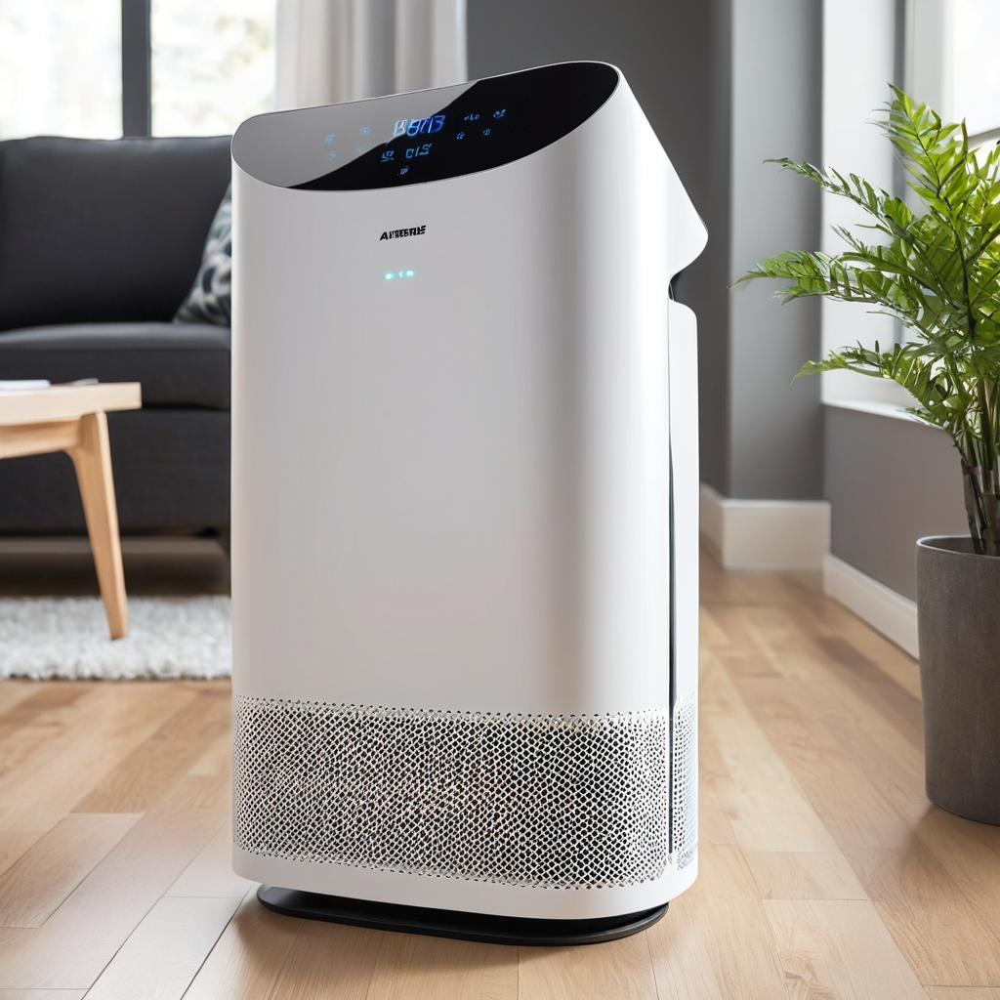
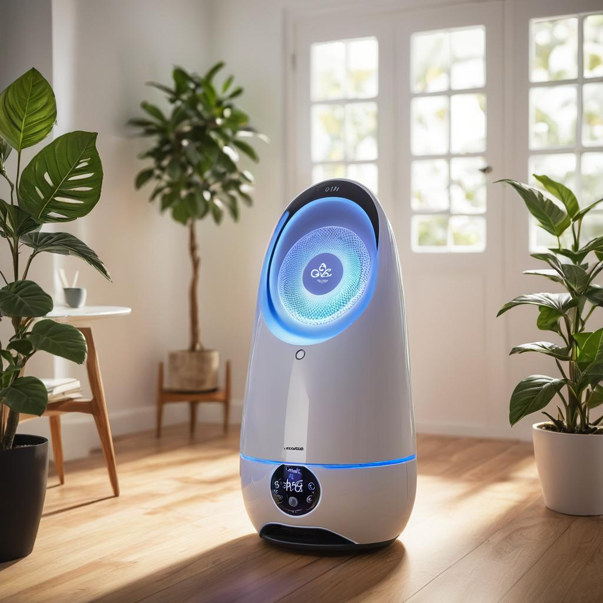
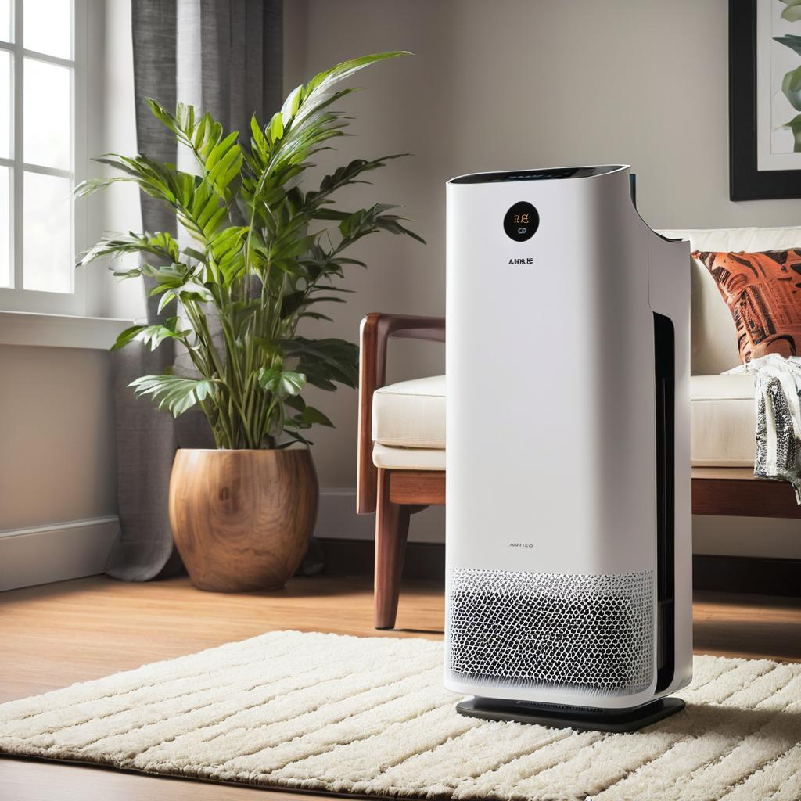

Transforme sua casa em um oásis de ar puro.
O AirPurify Pro é um
dispositivo revolucionário de
purificação do ar,
projetado
para fornecer um
ambiente
interno mais saudável e limpo.
.jpg)
Conheça o AirPurify Pro
Modelos:
AirPurify Pro 1.0
A partir de 150US$.
AirPurify Pro 2.0
A partir de 250US$.
AirPurify Pro 3.0
A partir de 350US$.
O que o AirPurify Pro pode fazer ?
Funcionalidades:
-
O AirPurify Pro é capaz de purificar ou ar por meio de um sistema de filtragem de várias etapas. Seu filtro HEPA de alta eficiência é projetado para capturar até 99,97% das partículas de tamanho tão pequeno quanto 0,3 micrômetros, incluindo poeira, pólen, ácaros, esporos de mofo, bactérias e vírus. Além disso, o filtro de bloqueio ativado é eficaz na remoção de odores indesejados, fumaça, gases e compostos orgânicos voláteis (COVs) presentes no ar.
-
projetado para incluir uma função de ionização que emite íons negativos no ar. Esses íons têm sido associados a diversos benefícios para a saúde, incluindo: 1. **Melhora do Humor e Bem-Estar** .
-
o AirPurify Pro pode ser controlado por voz e tem um sistema inteligente de adapitação ao cliente, criando um ambiente mais aconchegante e seguro para seu cliente.